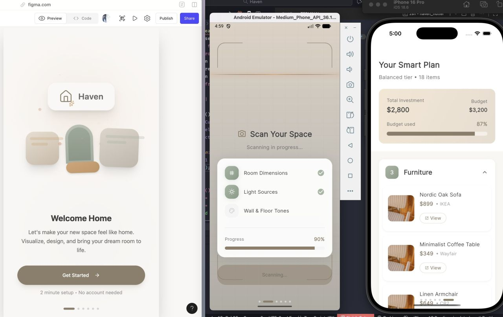
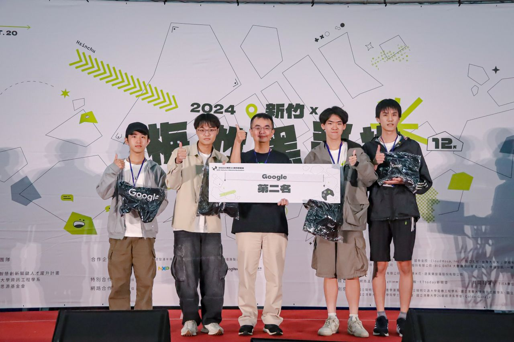
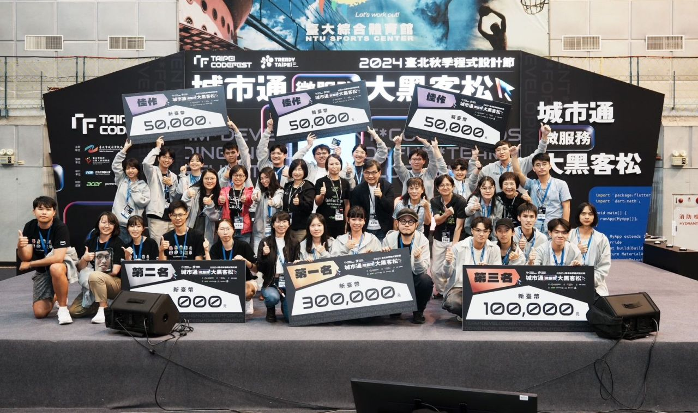
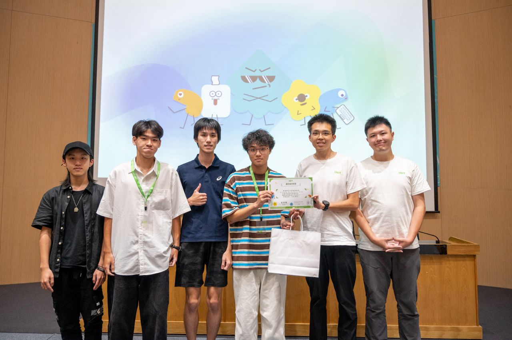
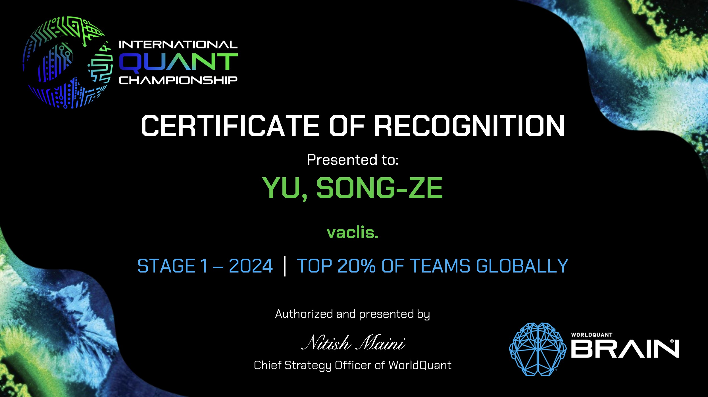

Experience
Research positions, engineering work, awards, invited talks, music tools, and open-source contributions. Papers are listed on the home page.
Research
-
NTU Music and AI Lab
- Leading the development of a large audio-language model (LALM) for music, bringing together insights from prior music benchmarking, methodology, and diagnostic studies into large-scale model alignment and training, with collaborators from NVIDIA, BAIR, NTNU, Queen Mary University of London, and Prof. Hung-yi Lee's group.
- Researching symbolic representation alignment for text-to-music generation and representation transfer and utilization in audio-language models, leading to MIDI-REPA and encoder–decoder probing studies.
-
Berkeley AI Research
- Revisiting the ubiquitous 25 ms log-Mel frontend used across general audio encoders and models under conflicting speech–music resolution demands, leading to UniFront.
- Lead-developed PitchBench and Anamnesis, spanning the basics of music understanding in audio-language models and large-scale human simulation.
-
Center for New Music & Audio Technologies (CNMAT)
- Led the research direction on interactive, musician-centered audio effect modeling and editing, extending single-shot methods toward iterative refinement and leading to InstructFX2FX.
-
Acoustics and Hearing Group (AHG)
- Developed the audio-to-equalizer model (VTR) for single-shot tone replication as my undergraduate capstone project, later deployed as a Virtual Studio Technology (VST) plugin at Positive Grid.
Selected Engineering Experience
-
BerkeleyTime
Machine Learning Pod — Pod Lead Jan – May 2026
- Led a 10-member machine learning team across semantic search, recommendation system, and enrollment prediction, coordinating researcher–engineer pairs and designers from model development through deployment.
- Led development of a new Explore page, integrating course recommendations into BerkeleyTime's product experience.
Catalog Pod — Machine Learning Engineer Sep – Dec 2025
- Built BGE text-embedding and FAISS vector-search services with FastAPI for 122K+ monthly users.
- Reduced GraphQL first-load latency from 25s to 1s with pagination and Redis caching; shipped and fixed 20+ pull requests.
-
Positive Grid
- Served as Scrum Master for Amp-AI-SaaS and designed the Multi-Agent Orchestration Harness for ongoing software-engineering workflows at Positive Grid.
- Integrated my capstone VTR audio-to-EQ model into a JUCE VST plugin, using PyTorch inference for real-time audio processing in a digital audio workstation.
Awards & Invited Talks
-
Meichu Hackathon 2026
- Built GodEyes, a physical AI system using a world model to reconstruct crime scenes as explorable 3D worlds, with SLAM-based navigation and on-device NPU gesture tracking on an NXP i.MX 93 edge board.
World model (World Labs Marble) · 3D Gaussian Splatting · SLAM · Edge NPU · NXP i.MX 93
-
Claude × a16z × Berkeley M.E.T. Makeathon
- Built Haven in five hours, a mobile app that personalizes home-design recommendations from room scans.

-
Meichu Hackathon 2024
- Built Travelity, an AI travel planner using interests, personality, and real-time map and search data.
Flutter · Python · Google Maps API · Gemini

-
Taipei Hackathon 2024
- Built ParkFlow, a WebView microservice for real-time parking information, navigation, and notifications; selected for integration into Taipei's official city app (3M+ downloads) and awarded NT$100K.
- Documented the project's development in a video reaching 1K+ views; delivered an invited talk hosted by the Taipei City Government the following year.
Vue 3 · Flutter · Taipei Parking API · Mapbox

-
SITCON Hackathon 2024
- Built ccDiary, an AI-assisted mental-health journal with emotion analysis and anonymous social features.
Flutter · Python · LangChain · PyTorch

-
WorldQuant Challenge 2024

-
NCKU Campus Speaker
- Delivered an invited talk for incoming students on writing music as a diary, then turned audience-submitted phrases and sentences on Slido into improvised songs performed live.
Music Tools GitHub ↗
-
npm package
MIDI RealPlayer — Web
- Designed for music researchers building demo pages and listening tests. Embed synchronized audio and MIDI playback with per-track controls directly in your page.
-
VS Code extension
MIDI RealPlayer — VS Code
- Play and inspect multi-track MIDI inside VS Code, with SoundFont instruments, synchronized piano-roll visualization, and track mixing controls.
-
Music tool
Open Source
-
Education
BerkeleyTime
- Led a 10-member machine learning team across semantic search, recommendation system, and enrollment prediction, coordinating researcher–engineer pairs and designers from model development through deployment.
- Led development of a new Explore page, integrating course recommendations into BerkeleyTime's product experience.
- Built BGE text-embedding and FAISS vector-search services with FastAPI for 122K+ monthly users.
- Reduced GraphQL first-load latency from 25s to 1s with pagination and Redis caching; shipped and fixed 20+ pull requests.
-
Civic tech
ParkFlow — Taipei TownPass
- Built ParkFlow, a WebView microservice for real-time parking information, navigation, and notifications; selected for integration into Taipei's official city app (3M+ downloads) and awarded NT$100K.
- Documented the project's development in a video reaching 1K+ views; delivered an invited talk hosted by the Taipei City Government the following year.
-
Agent tooling
Claude Code Remote
- Contributed improvements to reliability and configurability for remote Claude Code workflows, with contributions highlighted on X.